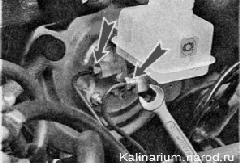
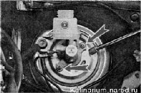
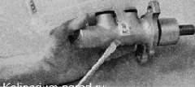

Главный тормозной цилиндр - снятие и установкаДля вьполнения работы потребуется специальный ключ на 10 мм для штуцеров тормозных трубок. Снятие 1. Подготавливаем автомобиль к выполнению работы. 2. Снимаем аккумуляторную батарею. 3. Снимаем шланг подвода воздуха к дроссельной заслонке. 4. Резиновой грушей или шприцем отбираем тормозную жидкость из бачка главного тормозного цилиндра (см. выше, «Гидравлический привод тормозов — замена тормозной жидкости»). 5. Специальным ключом на 10 мм ослабляем затяжку штуцеров четырех тормозных трубок главного тормозного цилиндра. Рожковым ключом на 10 мм полностью выворачиваем штуцеры четырех трубок. 
6. Осторожно, не изгибая сильно трубки, отводим их от главного тормозного цилиндра. 7. Ключом на 17 мм отворачиваем две гайки крепления главного тормозного цилиндра к корпусу вакуумного усилителя.  8. Главный тормозной цилиндр в сборе с бачком снимаем с вакуумного усилителя 9. При необходимости освободив два фиксатора, выводим патрубки бачка из резиновых уплотнительных втулок. Установка 1. Собираем и устанавливаем главный тормозной цилиндр в обратной последовательности. Перед установкой бачка на новый тормозной цилиндр смачиваем патрубки бачка чистой тормозной жидкостью. Штуцеры тормозных трубок затягиваем специальным ключом. 2. Заполняем бачок свежей тормозной жидкостью и прокачиваем гидравлический привод тормозной системы. 3. Проверяем отсутствие утечек жидкости в местах подсоединения тормозных трубок к главному тормозному цилиндру. |